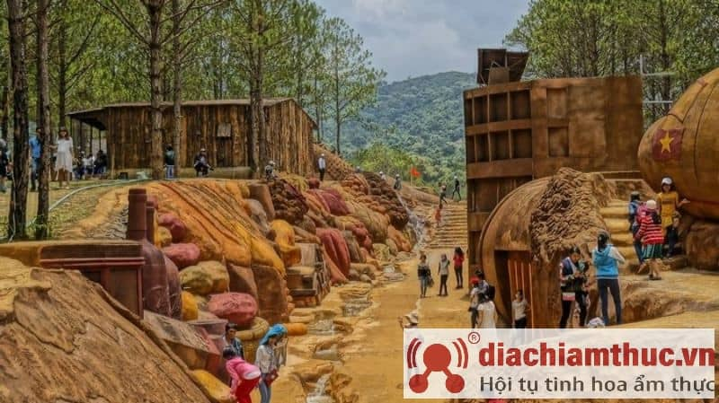
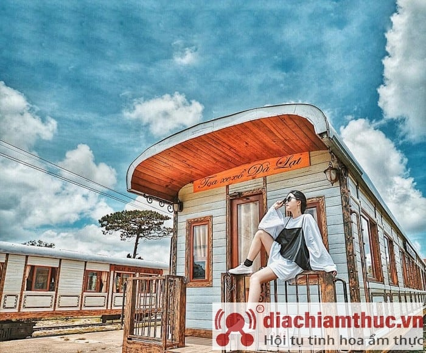
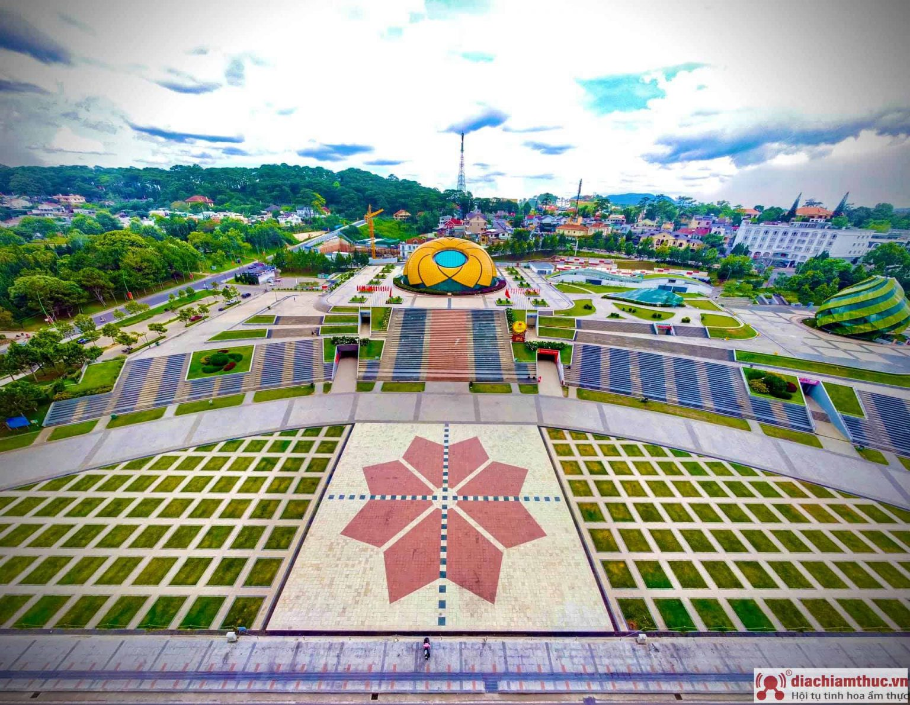

Đà Lạt là thành phố vô cùng xinh đẹp. Chỉ cần bước chân ra đường là bạn đã thấy đẹp rồi. Vậy mà nơi đây còn vô số địa điểm tham quan du lịch, vô số danh thắng. Nếu chỉ đến Đà Lạt vài ba ngày ngắn ngủi bạn sẽ không thể nào thưởng thức hết tất cả vẻ đẹp của thành phố đâu.
Bởi vậy, lựa chọn ưu tiên đến những địa điểm nào khi đặt chân đến Đà Lạt cũng là điều khiến bạn phân vân. Ở đây chúng tôi có một vài kinh nghiệm về những địa điểm du lịch nổi tiếng để các bạn tham khảo. Hy vọng những thông tin này sẽ giúp bạn chọn được những điểm đến lý tưởng khi đặt chân đến Đà Lạt.
Đây là một địa điểm tham quan cực kì độc đáo của Đà Lạt. Sự độc đáo nằm ở chỗ hầu hết các kiến trúc ở đây đều được làm bằng đất sét nung khô cứng. Bạn sẽ bắt gặp mô hình những địa danh văn hoá, lịch sử nổi tiếng trên cả nước được phục dựng băng đất sét ở đây giống y như thật.
Từ đầu làng đến cuối làng là màu đất sét đặc trưng hút mọi ánh nhìn. Những hình ảnh điêu khắc tinh xảo trên đất sét sẽ quyến rũ bạn, khiến bạn không thể rời mắt. Đến đây bạn chỉ có thể đi bộ. Vì vậy nhớ đừng mang giày cao gót nhé!
Đây là nhà ga cổ nhất Đông Dương. Ga Đà Lạt được công nhận di tích lịch sử kiến trúc cấp quốc gia. Rất nhiều du khách ghé nơi đây để lưu lại những hình ảnh xinh đẹp của một Đà Lạt cổ kính. Bạn có thể chụp hình cùng những toa tàu, đường ray, đường hầm hoả xa. Những góc hình khác nhau sẽ giúp bạn khám phá những nét đẹp tuyệt vời của địa danh này. Cũng chính vì vậy nơi đây được nhiều cặp đôi lựa chọn để chụp hình cưới.
Quảng trường Lâm Viên nằm ngay trung tâm thành phố. Đối diện Hồn Xuân Hương thơ mộng. Đây là nơi bạn có thể chọn vô số góc check-in để có những tấm hình đếm like mỏi tay. Tiêu biểu nhất là góc chụp với khối bông hoa dã quỳ và khối nụ Astiso thiết kế bằng kính màu vô cùng hấp dẫn. Bạn có thể tham quan cung biểu diễn nghệ thuật với 1.500 chỗ ngồi ngay trông bông dã quỳ. Hoặc thưởng thức cà phê, thức uống trong những quán cà phê, quán bar xinh đẹp bên trong nụ hoa thiết kế hình chóp nhọn.
Khu du lịch Hoa Sơn Điền Trang nằm giữa cung đường đèo Tà Nung. Nơi đây khá rộng. Đường đi khá dốc, quanh co. Bạn có thể tìm ra vô số góc sống ảo ở đây. Nhưng thú vị nhất chính là bàn tay Phật giữa núi rừng. Bàn tay Phật được tạo bởi rất nhiều sợi dây rừng chắc chắn. Đây là địa điểm tập trung đông nhất. Hầu như ai đến Hoa Sơn Điền Trang cũng muốn ghi lại nét đẹp với bàn tay đặc biệt này.
Đà Lạt chưa bao giờ thôi hấp dẫn du khách. Kể các đã đến Đà Lạt rồi bạn vẫn muốn đến hoài. Nếu vẫn còn những phân vân vì không biết phải chuẩn bị những gì cho chuyến đi Đà Lạt tự túc của mình thì hi vọng những thông tin trên đây sẽ hữu ích cho bạn. Hãy đến Đà Lạt và cảm nhận thiên đường là có thật nhé. Chúc bạn một chuyến đi Đà Lạt trọn vẹn. Và nhớ chia sẻ những kinh nghiệm du lịch Đà Lạt của các bạn với Diachiamthuc.vn chúng tôi nhé! Nếu bạn muốn chúng tôi viết về chủ đề gì hãy comment xuống phía dưới để chúng tôi biết. Hẹn gặp lại các bạn trong các bài viết tiếp theo!